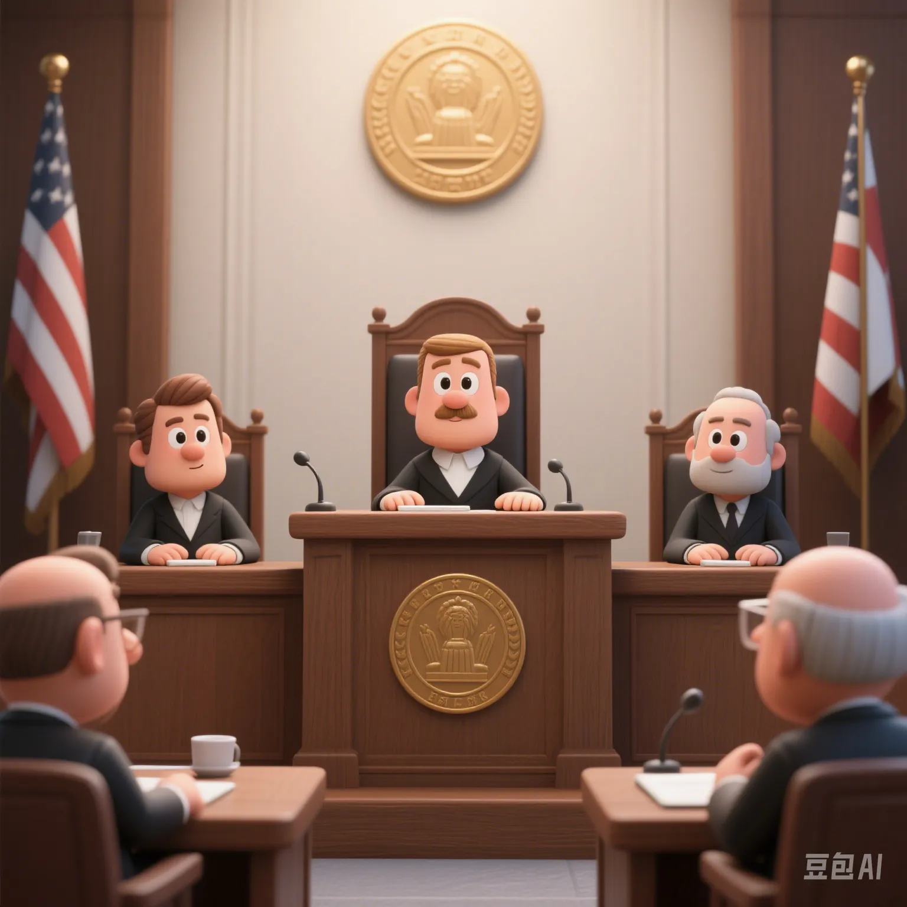

The Global Spread of Cancel Culture: Justice Awakening or Modern Trial?
PeaceLove.Top Insights :2025-04-17
🌍 The Rise and Spread of Cancel Culture
In the past few years, a widely - discussed topic on social media platforms has been "Cancel Culture". This phenomenon refers to when someone or an organization makes inappropriate remarks or behaves wrongly, the public on social media exerts group pressure, demanding an apology, resignation, or even complete disappearance from the public view. This phenomenon has spread globally, sparking extensive discussions and controversies.
Supporters see cancel culture as a response to social injustice and immoral behavior, a manifestation of 'justice awakening'. However, critics believe it is an extreme form of public - opinion trial that easily violates individual freedom and exacerbates social contradictions. So, does the rise of cancel culture globally represent real social progress or just a form of moral trial in modern society?
📊 Global Data Analysis of Cancel Culture
Through the following data table, we analyzed people's attitudes and participation levels towards cancel culture globally.
| Country/Region | Attitude towards Cancel Culture | Support Ratio (%) | Participation Level | Awareness of Negative Effects (%) | Social - Media Supervision Intensity |
|---|---|---|---|---|---|
| USA | Support social justice, tend to severe trials | 70% | High | 40% | Medium |
| UK | Tend to support but emphasize rationality | 60% | Medium | 35% | High |
| Germany | Support law and justice but oppose excess | 50% | Medium | 30% | High |
| France | Strongly support freedom of speech, oppose extremes | 45% | Medium - low | 50% | Relatively high |
| Japan | Emphasize social harmony, oppose over - reactions | 40% | Low | 60% | High |
Conclusion: Different countries have different attitudes towards cancel culture. The support rate is relatively high in the USA, while in countries that emphasize freedom of speech and individual rights (such as France), people's support for cancel culture is lower, and they believe it may bring negative effects.
🤔 Justice or Excessive Punishment in Cancel Culture?
1. The Positive Role of Cancel Culture: Promoting Social Progress
Supporters believe that cancel culture represents society's zero - tolerance for immoral behavior. It helps expose issues such as power inequality, gender discrimination, and racism. Through extensive discussions on social media, the public can correct and judge harmful behaviors, promoting social justice and equality.
Case: The #MeToo Movement and Cancel Culture
The rise of the #MeToo movement exposed many long - hidden sexual - harassment behaviors. The exposure of some well - known figures, such as Hollywood producer Harvey Weinstein, eventually led to his 'cancellation', meaning he lost his job, social status, and even faced legal lawsuits. This 'cancellation' is considered a correction of past unjust behaviors and support for the victims.
2. The Negative Effects of Cancel Culture: Risks of Extremity and Injustice
However, the negative effects of cancel culture are gradually emerging. Many people believe that this phenomenon easily goes to extremes, leading to the rapid destruction of an individual's social reputation without a fair trial process. The 'public - opinion trial' on social media often ignores the complexity of facts, resulting in personal attacks and malicious harassment.
Case: Well - known author J.K. Rowling
J.K. Rowling was widely criticized and 'cancelled' for her remarks about the transgender community. Although her remarks were controversial, whether she should be subjected to such a severe 'cancellation' trial remains a highly debated topic. Her supporters believe that although her views may have offended some people, it is still worth pondering whether she should completely lose her status in the public eye.
🧠 The Psychological Mechanisms behind Cancel Culture
The phenomenon of cancel culture is not accidental; there are profound psychological principles behind it. Understanding these psychological mechanisms helps us view this phenomenon more rationally.
1. Collective Identity and 'Moral Superiority'
On social media, users often gain collective identity by 'taking sides'. Moral superiority makes individuals tend to choose severe 'cancellation' actions when facing moral disputes, believing they are on the side of justice, while the 'cancelled' individuals are regarded as symbols of moral corruption.
2. Information Overload and Emotional Judgments
The fragmentation and overload of information on social media make it difficult for people to fully understand the truth of events. Emotional judgments have become an important driving force for the spread of cancel culture. When information is presented in a biased or overly simplified way, the public is prone to over - react, forming a 'group effect'.
3. Ubiquitous Public - Opinion Pressure
The anonymity and immediacy of social media make cancel culture easier to spread. When an event attracts a lot of attention, individuals may feel great pressure from the Internet, forcing them to participate, and even engage in intense criticism, forming a 'group - pressure' effect.
🛡️ How to Balance Justice and Tolerance: Avoiding the Extremes of Cancel Culture
To prevent cancel culture from going to extremes, we should take a series of measures to balance social justice and tolerance:
1. Encourage Rational Discussions and Diverse Views
Social platforms should advocate rational and constructive discussions and avoid simple'moral trials'. When expressing opinions, people should respect others' positions and views instead of rushing to make undifferentiated accusations.
2. Strengthen Platform Responsibility and Transparency
Social - media platforms need to strengthen the supervision of speech to prevent malicious online violence and cyber - stalking. Platforms should clarify standards to ensure that each event is handled based on sufficient factual evidence and avoid excessive punishment.
3. Strengthen Moral Education and the Spirit of Inclusion
Society should strengthen moral education and advocate inclusion and understanding. When facing different opinions, we should avoid over - extreme reactions, respect different ideas and values, and ensure fairness and rationality.
🏁 Conclusion: How Can Justice and Tolerance Coexist?
Cancel culture represents modern society's reaction to unjust behaviors, but it may also lead to the extremization of moral trials. As members of the global online society, we should be based on rationality and tolerance to promote a more just, transparent, and inclusive online environment. We should not only pursue justice but also respect everyone's basic rights and maintain the tolerance and understanding in human nature.